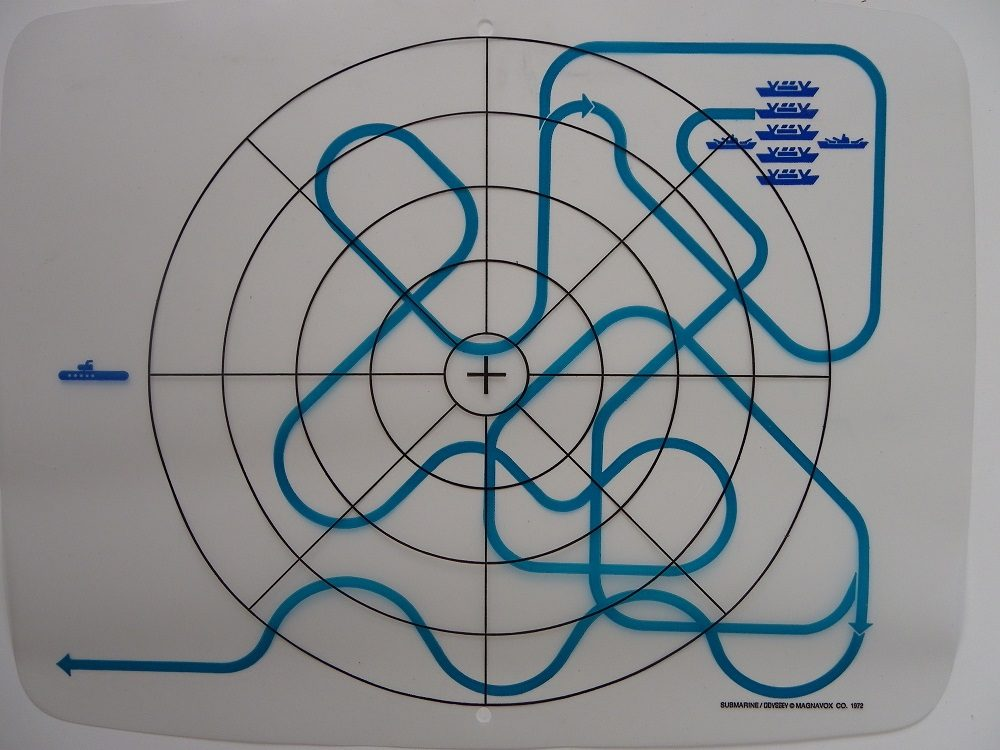

Odyssey, o primero console

© Magnavox Odyssey
O console Odyssey foi o primeiro console de videogame doméstico a ser lançado comercialmente. Foi desenvolvido pela empresa Magnavox e lançado em 1972. O Odyssey foi criado por Ralph Baer, considerado o "pai dos videogames", e marcou o início da era dos consoles de videogame.
O Odyssey foi um console de jogos bastante simples em comparação com os consoles modernos. Ele vinha com uma série de cartões de jogo que os jogadores inseriam no console para selecionar o jogo desejado. Os gráficos eram muito básicos e eram projetados para serem exibidos em uma televisão preto e branco.
O console Odyssey foi um sucesso moderado em seu lançamento inicial. Os jogos disponíveis eram principalmente variações de jogos clássicos, como tênis e hóquei, com jogabilidade limitada. No entanto, o Odyssey estabeleceu os fundamentos para os futuros consoles de videogame e ajudou a criar uma indústria multimilionária.
Ao longo dos anos, a Magnavox lançou várias versões atualizadas do console Odyssey, com melhorias nos gráficos e na jogabilidade. O Odyssey 2, lançado em 1978, foi uma das versões mais populares e trouxe uma maior variedade de jogos e cores para os jogadores.
O Odyssey também enfrentou concorrência de outros consoles que foram lançados na década de 1970, como o Atari 2600. Esses consoles ofereciam gráficos mais avançados e jogabilidade mais sofisticada, o que afetou a popularidade do Odyssey.
No entanto, o Odyssey deixou um legado significativo na história dos videogames. Ele estabeleceu as bases para os consoles modernos e ajudou a popularizar a ideia de jogos eletrônicos em casa. Muitas das ideias e conceitos introduzidos no Odyssey foram aprimorados e aperfeiçoados nas gerações seguintes de consoles.
Embora o Odyssey não seja mais produzido atualmente, sua influência e importância na indústria dos videogames são inegáveis. Ele abriu o caminho para o desenvolvimento de consoles mais avançados e inovadores que temos hoje, e seu impacto pode ser sentido em toda a indústria de jogos eletrônicos.
Tennis: O jogo clássico que definiu a era dos jogos de esporte no Magnavox Odyssey

© Tennis
Tennis foi um dos jogos de maior sucesso no console Magnavox Odyssey, lançado em 1972. Desenvolvido por Ralph Baer, o pai dos jogos eletrônicos domésticos, o jogo foi um dos primeiros jogos de esporte a serem criados para um console doméstico. Foi também um dos primeiros jogos a usar gráficos rudimentares, com duas raquetes simples e uma bola que se movia pela tela.
O objetivo do jogo era simples: dois jogadores controlavam as raquetes na tela e tentavam acertar a bola para o outro lado da quadra. O jogo tinha várias configurações, como a velocidade da bola, a inclinação da quadra e a habilidade dos jogadores, tornando-o desafiador e emocionante. Os jogadores também podiam controlar a direção do lançamento da bola, o que permitia um jogo mais estratégico.
Embora o jogo possa parecer primitivo em comparação com os jogos modernos de tênis, foi uma verdadeira inovação para sua época. Foi um dos primeiros jogos de esporte a serem desenvolvidos para um console doméstico e ajudou a estabelecer a indústria de jogos eletrônicos que conhecemos hoje.
O sucesso do jogo Tennis inspirou muitos outros jogos de esporte no Magnavox Odyssey e em outros consoles que vieram depois. Foi um precursor dos jogos de tênis modernos, como o popular jogo de console, Virtua Tennis, e continuou a influenciar a indústria de jogos de esporte em geral.
Em resumo, Tennis é um jogo clássico que definiu a era dos jogos de esporte no Magnavox Odyssey e ajudou a estabelecer a indústria de jogos eletrônicos como a conhecemos hoje. Se você ainda não jogou o jogo Tennis do Magnavox Odyssey, vale a pena experimentá-lo e apreciar sua importância histórica na evolução dos jogos eletrônicos.
Simon Says: O jogo clássico que desafiou a memória e a coordenação no Magnavox Odyssey

© Simon Says
Simon Says foi um dos jogos mais populares no console Magnavox Odyssey, lançado em 1972. Desenvolvido por Ralph Baer, o pai dos jogos eletrônicos domésticos, o jogo foi um dos primeiros jogos de memória e coordenação a serem criados para um console doméstico.
O objetivo do jogo era simples: Simon, a máquina, apresentava uma sequência de cores e sons e os jogadores tinham que repetir a sequência corretamente para avançar para o próximo nível. A cada nível, a sequência ficava mais longa e complexa, desafiando a memória e a coordenação dos jogadores. Se o jogador cometesse um erro, o jogo terminava.
Embora o jogo possa parecer simples, foi uma verdadeira inovação para sua época. Foi um dos primeiros jogos a desafiar a memória e a coordenação dos jogadores, e ajudou a estabelecer a importância dessas habilidades nos jogos eletrônicos.
O sucesso do jogo Simon Says inspirou muitos outros jogos de memória e coordenação no Magnavox Odyssey e em outros consoles que vieram depois. Foi um precursor dos jogos de quebra-cabeça modernos, como o popular jogo de console, Brain Age, e continuou a influenciar a indústria de jogos de memória e coordenação em geral.
Em resumo, Simon Says é um jogo clássico que desafiou a memória e a coordenação dos jogadores no Magnavox Odyssey e ajudou a estabelecer a importância dessas habilidades nos jogos eletrônicos. Se você ainda não jogou o jogo Simon Says do Magnavox Odyssey, vale a pena experimentá-lo e apreciar sua importância histórica na evolução dos jogos eletrônicos.
Haunted House do Magnavox Odyssey
© Haunted House
Lançado em 1981, o jogo Haunted House foi um dos primeiros jogos de terror a serem criados para um console de jogos eletrônicos.
Desenvolvido pela Atari, o jogo desafia os jogadores a explorar uma mansão assombrada, enfrentando fantasmas e outros perigos em busca de tesouros escondidos.
O jogo é dividido em seis níveis de dificuldade, cada um representado por uma cor diferente.
O jogador controla um personagem que se move pela casa usando o joystick, e deve encontrar a chave para abrir a porta do tesouro em cada nível.
No caminho, o jogador deve evitar obstáculos como aranhas, morcegos e poças de lodo, além de enfrentar os fantasmas que habitam a casa.
Haunted House foi um dos primeiros jogos de terror a apresentar gráficos coloridos e detalhados, o que o tornou um grande sucesso entre os jogadores na época.
Além disso, o jogo também apresentava efeitos sonoros assustadores, incluindo risadas de fantasmas e sons de portas rangendo.
Embora o jogo possa parecer simples pelos padrões de hoje, foi uma verdadeira inovação para sua época.
Foi um dos primeiros jogos a apresentar elementos de terror e suspense, e ajudou a estabelecer a importância desses gêneros nos jogos eletrônicos.
Em resumo, Haunted House é um jogo clássico de terror que desafia os jogadores a explorar uma mansão assombrada em busca de tesouros escondidos.
Se você ainda não jogou o jogo Haunted House do Magnavox Odyssey, vale a pena experimentá-lo e apreciar sua importância histórica na evolução dos jogos eletrônicos de terror.
Football do Magnavox Odyssey
© Football
Lançado em 1972, o console Magnavox Odyssey foi um dos primeiros consoles domésticos de jogos eletrônicos e contava com uma ampla variedade de jogos, incluindo o icônico jogo de futebol, Football. Desenvolvido por Ralph Baer, o pai dos jogos eletrônicos, o jogo permitia aos jogadores simular uma partida de futebol em casa, com gráficos simples mas divertidos e uma jogabilidade empolgante.
Football do Magnavox Odyssey permitia aos jogadores escolher uma equipe entre as opções oferecidas pelo jogo e competir em uma partida completa de futebol. A ação era vista de cima e os jogadores se moviam como peças em um tabuleiro. A bola era representada por um ponto branco e o objetivo era marcar mais gols que o adversário.
Embora o jogo possa parecer simples pelos padrões de hoje, ele era inovador na época. Football permitiu aos jogadores simular um esporte popular em casa, antes mesmo do surgimento dos jogos eletrônicos modernos e realistas de esportes.
Football do Magnavox Odyssey também foi importante por ser um dos primeiros jogos a apresentar um modo de jogo multiplayer. Dois jogadores podiam competir um contra o outro no mesmo console, adicionando uma dimensão social ao jogo.
Em resumo, Football do Magnavox Odyssey é um jogo clássico que permitiu aos jogadores simular uma partida de futebol em casa, antes mesmo do surgimento dos jogos eletrônicos modernos e realistas de esportes. Se você é um fã de jogos eletrônicos clássicos ou de futebol, não pode deixar de experimentar este título icônico.
Submarine: mergulhe em um clássico do Magnavox Odyssey

© Submarine
O Magnavox Odyssey foi o primeiro console doméstico de jogos eletrônicos e marcou o início da indústria dos jogos eletrônicos. O console foi lançado em 1972 e, desde então, vários jogos clássicos foram desenvolvidos para ele, incluindo o jogo Submarine. Desenvolvido por Ralph Baer, o jogo Submarine foi lançado em 1973 e é considerado um dos jogos mais populares do Magnavox Odyssey.
Em Submarine, os jogadores controlam um submarino em uma missão perigosa para destruir navios inimigos. O jogo tem uma perspectiva de visão superior, com gráficos simples, mas ainda assim interessantes. Os jogadores devem manobrar o submarino e evitar os navios inimigos, enquanto tentam acertá-los com torpedos.
O jogo tem vários níveis e cada nível é mais difícil que o anterior. À medida que o jogador avança no jogo, o número de navios inimigos aumenta e eles começam a se mover mais rapidamente, tornando a tarefa ainda mais desafiadora. Além disso, o submarino também pode ser atingido pelos navios inimigos, tornando o jogo ainda mais emocionante.
Submarine foi um sucesso na época do seu lançamento e é considerado um dos jogos mais emblemáticos do Magnavox Odyssey. O jogo era simples, mas oferecia horas de diversão e desafio para jogadores de todas as idades. Foi também um dos primeiros jogos a apresentar um modo de jogo multiplayer, permitindo que dois jogadores competissem no mesmo console.
Em resumo, Submarine é um jogo clássico do Magnavox Odyssey que ainda é lembrado hoje em dia. O jogo oferece uma experiência emocionante e desafiadora, com uma jogabilidade simples, mas viciante. Se você é fã de jogos eletrônicos clássicos e está procurando algo para jogar, Submarine é definitivamente uma escolha que vale a pena.
Ski: um clássico emocionante do Magnavox Odyssey
© Ski
O Magnavox Odyssey, o primeiro console doméstico de jogos eletrônicos, foi lançado em 1972 e abriu as portas para a indústria dos jogos eletrônicos que conhecemos hoje. Com vários jogos clássicos em seu catálogo, o Magnavox Odyssey tem algo para todos os tipos de jogadores, e o jogo Ski é um dos títulos mais populares do console.
Desenvolvido por Bill Enders, Ski foi lançado em 1972 e apresenta uma jogabilidade simples, mas altamente emocionante. No jogo, os jogadores assumem o controle de um esquiador que deve descer uma montanha nevada, evitando árvores e outros obstáculos, enquanto tentam completar o percurso o mais rápido possível.
O jogo apresenta gráficos simples, com a montanha e os obstáculos sendo representados por linhas e pontos, mas isso não diminui a emoção do jogo. O desafio do Ski está em controlar a velocidade do esquiador e fazer curvas apertadas sem colidir com os obstáculos. O jogo tem vários níveis, cada um mais difícil que o anterior, e os jogadores devem completar cada nível no tempo mais rápido possível para obter uma pontuação alta.
O Ski foi um dos primeiros jogos a apresentar uma jogabilidade em primeira pessoa, em que os jogadores vêem os obstáculos pela perspectiva do esquiador. Isso adicionou um elemento extra de realismo e emoção ao jogo, tornando-o ainda mais envolvente.
Em resumo, Ski é um clássico emocionante do Magnavox Odyssey que ainda é lembrado hoje em dia. Com sua jogabilidade simples, mas viciante, e gráficos marcantes, o jogo oferece uma experiência de esqui emocionante que ainda é divertida para os jogadores de todas as idades. Se você é fã de jogos eletrônicos clássicos, Ski é um jogo que você definitivamente precisa experimentar.
Table Tennis: O incrível jogo de ping pong do Magnavox Odyssey
© Table Tennis
Se você é um fã de jogos de videogame, provavelmente já jogou ou pelo menos ouviu falar do jogo de Table Tennis do Magnavox Odyssey. Lançado em 1972, esse jogo foi um dos primeiros jogos de videogame domésticos comercializados e ainda hoje é considerado um clássico.
O jogo de Table Tennis do Magnavox Odyssey é simples, mas extremamente viciante. O jogador controla um quadrado na tela que representa a raquete de pingue-pongue, e deve acertar a "bola" representada por um ponto que se move pela tela. O jogo é jogado em duas dimensões e a bola pode ser rebatida em diferentes ângulos e velocidades, o que exige muita habilidade do jogador.
O jogo também tem a opção de mudar o tamanho da bola, a velocidade e a direção do vento, o que aumenta a dificuldade e torna o jogo mais desafiador. Além disso, o jogo permite que duas pessoas joguem juntas, o que é uma ótima maneira de se divertir com amigos e familiares.
Table Tennis do Magnavox Odyssey é um dos primeiros jogos de videogame a usar a tecnologia de rasterização, que permitia ao jogo exibir imagens mais complexas e realistas. Isso tornou o jogo uma referência em termos de gráficos e gameplay para os jogos que surgiram posteriormente.
Percepts: o jogo educativo do Magnavox Odyssey
© Percepts
Lançado em 1972, o Magnavox Odyssey foi o primeiro console de videogame doméstico comercializado no mundo, e trouxe vários jogos interessantes e inovadores. Um desses jogos foi o Percepts, um jogo educativo que ensina sobre cores e formas.
Percepts é um jogo simples, mas desafiador. O jogador tem que escolher a cor ou a forma correta de um ponto que aparece na tela. O jogo começa fácil, com apenas algumas cores e formas, mas fica cada vez mais difícil à medida que o jogador avança para níveis mais altos.
Uma das coisas interessantes sobre o jogo é que ele ensina as cores e formas de uma forma divertida e interativa. O jogador é recompensado por acertar as cores e formas corretas, e é incentivado a continuar jogando para avançar para níveis mais altos e desafiadores.
Outra característica do Percepts é que ele pode ser jogado por uma ou duas pessoas. Isso significa que você pode jogar com um amigo ou membro da família e competir para ver quem tem a melhor pontuação. Isso pode ser uma ótima maneira de passar o tempo e aprender juntos.
Embora o Percepts possa parecer simples à primeira vista, é um jogo que pode ser muito desafiador e viciante. Além disso, é uma maneira divertida de aprender sobre cores e formas e pode ser uma ótima adição à sua coleção de jogos clássicos.
Baseball: uma verdadeira lenda dos videogames
© Baseball
Se você é um fã de jogos clássicos de videogame, provavelmente já ouviu falar do jogo de Baseball do Magnavox Odyssey. Este jogo foi lançado em 1972, tornando-se um dos primeiros jogos de videogame domésticos disponíveis no mercado.
O jogo de Baseball do Magnavox Odyssey é um dos jogos mais icônicos e amados da história dos videogames. O jogador controla um time de Baseball e deve marcar o maior número de pontos possível ao jogar contra a equipe adversária. O jogo é jogado em duas dimensões e permite que os jogadores controlem a posição dos jogadores e a velocidade e direção da bola.
Uma das coisas mais impressionantes sobre o jogo de Baseball do Magnavox Odyssey é a sua precisão. Embora seja um jogo simples em termos de gráficos, a jogabilidade é muito precisa e exige muita habilidade para vencer. Os jogadores devem ter um bom timing para acertar a bola e devem prestar muita atenção à velocidade e direção da bola para não serem eliminados.
Outra característica notável do jogo é a opção de jogar com dois jogadores. Isso significa que você pode desafiar um amigo ou membro da família e competir para ver quem é o melhor jogador de Baseball. Isso pode ser uma ótima maneira de passar o tempo e se divertir juntos.